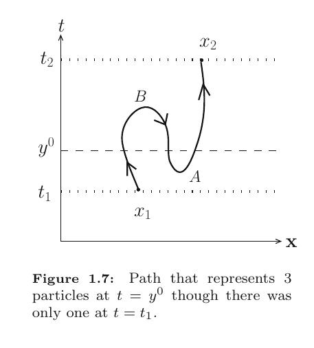

QFT Redux: A Zoomed-Out View of Quantum Field Theory - Part 1
TL; DR
Quantum field theory (aka QFT for short) is our best model of three out of the four fundamental forces of the universe. In this post I give a brief overview of the general approach of QFT. It’s primarily intended as a big picture overview of the landscape of QFT for someone who’s already had an intro to the subject. We start with canonical quantisation, but in future episodes we’ll try going into the path integral formalism.
Why QFT?
OK I lied. I’ll have to resort to the path integral method for one neat little argument that shows it more beautifully than any other way I’ve seen the necessity of quantum fields when we include relativity into the mix. Imagine a spacetime diagram showing the worldline of a particle. Nonrelativistically, we expect the world line to be a curve $\vec{x} = \vec{x}(t)$, where there’s a unique value of x at each point in time, i.e. the particle is localised at a single point in space for each instant of time. So certain classes of world lines are prohibited, such as the one below:

As you can see in the caption, such a world line would require variable particle numbers. So in NRQM, we generally prohibit these classes of world lines where $\vec{x}(t)$ isn’t single-valued, i.e. there exist multiple $\vec{x}$ values for each $t$. On the other hand, we do comfortably allow world lines where the same $\vec{x}$ is reached by the particle at different instants of time. This asymmetry between how space and time are treated in NRQM would disappear if we were to try to make QM compatible with relativity, which means that particle number is no longer conserved. Instead of position being an observable now, it becomes a label. At each point in spacetime, we can at best tell the number of particles there. This, coupled with locality, i.e. the requirement that operators at spacelike distances must commute, yields fields. So relativity and locality require us to come up with a theory with infinite degrees of freedom, one for each point in spacetime, i.e. a field. More rigorously, we can show that a single-particle relativistic quantum theory gives rise to nonzero amplitudes for propagation outside of the light cone, unless one introduces antiparticles which exactly cancel out said amplitude.
The Big Picture: QFT = QFTt + Symmetries
First up, like every other physical theory, QFT also relies on writing up the appropriate Lagrangian for the problem at hand. How do we arrive at the correct Lagrangian? We resort to the symmetries of spacetime. For example, the symmetry group of flat spacetime, the Poincare group (i.e. the Lorentz group along with spacetime translation symmetry) vastly restricts the possible Lagrangians we can write down. These symmetries of spacetime are also called “external” symmetries, since they’re symmetries of the world around us. There’s also something called “internal” or gauge symmetry. Coming up with appropriate Lagrangians for all the known forces is largely the subject matter of gauge theory, which we’ll come to later. And once we have the Lagrangian, quantizing the system as a field theory gives us dynamical prediction tools. Let’s call it QFTt (t for techniques). Then we have
$$ \text{QFT = QFTt + Symmetries (External + Gauge)}$$
QFTt gives us how to extract dynamical information from a given field theory, and how we construct the appropriate field theory we learn from the symmetries of spacetime and gauge transformations of the fields.
QFTt 1: Canonical Quantisation Redux
Now let’s zoom in on QFTt. The basic idea is to take EOMs and Fourier decompose the dynamical variables. For free (noninteracting) theories this decouples the oscillation modes and gives us SHO equations describing each mode. The SHO system is of course well known quantum mechanically, so that means we simply quantise the field by quantising each mode as an SHO. This gives us creation and annihilation operators for each mode.
But what exactly are the fields? They’re operator-valued functions of space and time, i.e. assign an operator to each point in spacetime. They act on the vacuum state |0⟩, and produce different n-particle states.
QFTt 2: Schroedinger, Heisenberg, and Other Pictures
The evolution of a system described by such operator-valued fields acting on the vacuum state is best done in the interaction picture, where the states at any time are modified by the interacting part of the Hamiltonian as per the Schroedinger picture, and the operators by the noninteracting part as per the Heisenberg picture. As operators don’t generally commute, the Schrödinger equation for this operator picture doesn’t immediately translate into a plug-and-play time-evolution operator. But there’s a rather shrewd way out where we can force everything to commute.
QFTt 3: Dyson’s Formula
This is our first key result in QFTt: Dyson’s formula. Time-ordered products of operators do “commute”, even if they do not in isolation. That means that the time-evolution operator is given by a simple exponential of the time ordered integral of the interaction Hamiltonian. $$ \textbf{Dyson’s formula: } U(t, t_0) = T \exp (-i \int_{t_0}^t H_I (t^{\prime}) dt^{\prime}) $$
Expansion of this exponential yields how the interaction terms influence time-evolution in successive orders of approximation.
QFTt 4: Wick’s Theorem
However, our task is still quite daunting, as we don’t yet have a general approach to evaluating time-ordered products. This brings us to the second key result in QFTt: Wick’s theorem.
$$ \boxed{\textbf{Wick’s theorem: }\text{Time-ordered product =}}\newline \boxed{\text{Normal-ordered product + all possible “contractions”}}$$
This enormously simplifies computations. Why?
We’re often interested in computing transition amplitudes from one multiparticle state to another, which we compute with VEVs. For normal-ordered products, the annihilation operators are all lined up to the right, which means they have zero VEV. So we have one term of the time-ordered product vanishing upon computing VEVs.
The other terms include all possible “contractions”. What do we mean by that? Contractions represent Feynman propagators, which will be our third key result of QFTt that’ll, coupled with Wick’s theorem and Dyson’s formula, lead us straight to Feynman diagrams. Stay tuned for the next episode to find out!
What’s Next?
I’m not nearly qualified enough to talk about QFT in detail, but I want to share a big-picture overview of the following ideas in upcoming blog posts.
- S-matrix and Feynman diagrams
- Renormalisation and EFTs (effective field theories)
- Symmetries of spacetime: Lie groups and representation theory
- Gauge theories; Electromagnetism as a U(1) gauge theory
- SU(2), Electroweak unification, symmetry breaking and the Higgs field
- SU(3) and QCD
References
- David Tong, Lecture Notes on QFT
- Lancaster and Blundell, Quantum Field Theory for the Gifted Amateur.
- Quevedo and Schachner, Cambridge Lectures on the Standard Model.
- Padmanabhan, Quantum Field Theory: The Why, What and How